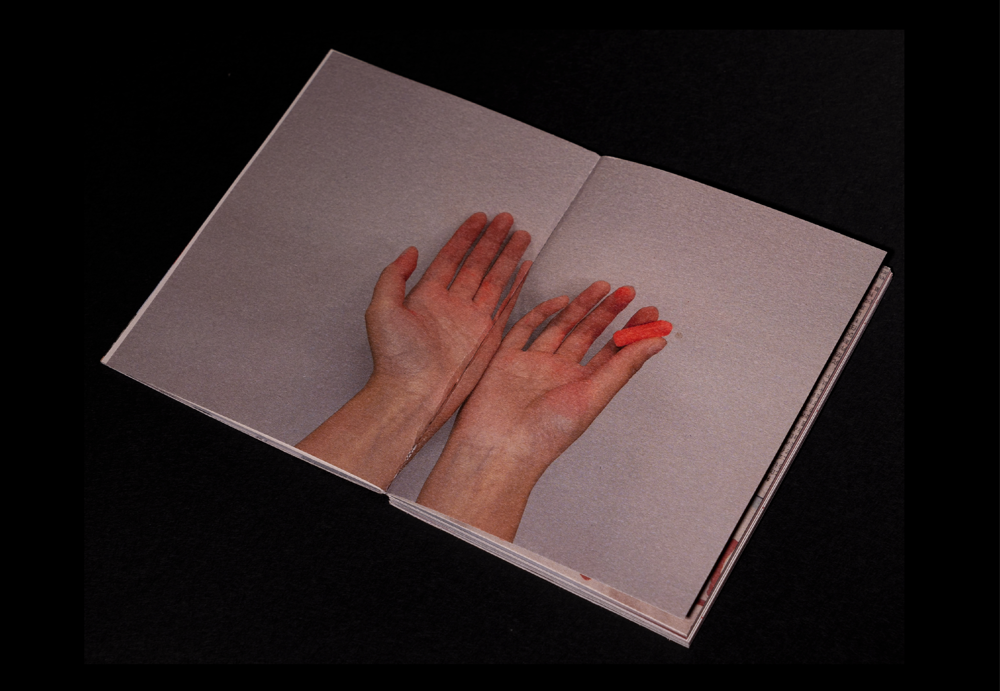
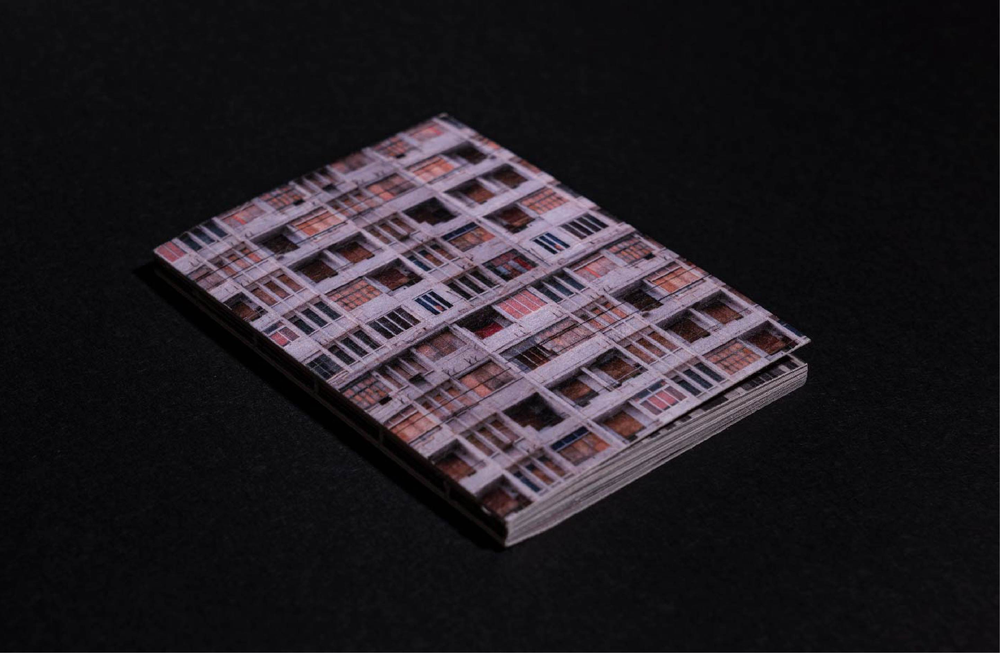

<!DOCTYPE html>
<html>
  <head>
    <title>KejingranKira</title>
		<meta charset="utf-8" />
    <meta name="viewport" content="width=device-width,initial-scale=1.0" />
    <link rel="icon" href="finalimg/k.png" />
    
  </head>

  </html>
  <body>
    <div class="box" id="box1" onclick="changeImage('box1')">
      
    </div>
    
    <div class="box" id="box2" onclick="changeImage('box2')">
      
    </div>
    <div class="imgx">
      
  </div>
  <div class="img3">
    
</div>
<div class="img4">
  
</div>
    <div class="p1">
      Interstice Living    
    </div>
    <div class="p2">
     2021.11
    </div>
    <div class="p3">
      The theme of this project is shelter and the people who live in it.
      <br>
During my research in urban Shanghai, I noticed a "old house" to be demolished in a busy neighbourhood, namely Building 1, Lane 1055, Fuxing East Road. The vitality of this neighbourhood and the isolation of the demolished house created a very tense contrast: city and urban ruins, indigenous people and foreigners, in a space made of steel, where people's different needs are constantly clashing, colliding and merging, like planets colliding together in the universe, while there are also occasional holes created by friction between two boulders, between which dust and debris are constantly falling.
<br>
"The 'dwelling' is interpreted at this point as a relationship between man and space. The building, as a physical presence, becomes a dwelling only when someone enters, inhabits and becomes attached to it. On this level, man himself carries the idea of dwelling with him in his search for space, like a snail always carrying a shell. This characteristic is particularly evident in the case of people who have no fixed place to live.
<br>
Based on local research and reading ideas, I have created my 'virtual dweller' Qi Yun. She is a 'rough sleeper', a temporary resident in a building to be demolished, a person who travels through the gaps and edges of the city. I will document Qi Yun's life in the demolished building in the book from the perspective of an interviewer during the project. 
     </div>
     <div class="p4">
      Click to change the pictures 
     </div>
     <div class="p5">
      Click to change the pictures
     </div>
     <a class="p6" href="graphicpage.html">Graphic</a>
    


     <script>
     var currentImageIndex1 = 0;
var images1 = [
  "finalimg/web/14.jpg",
  "finalimg/web/6.jpg",
  "finalimg/web/3.jpg",
  "finalimg/web/13.jpg",
];

var currentImageIndex2 = 0;
var images2 = [
  "finalimg/web/2.jpg",
  "finalimg/web/10.jpg",
  "finalimg/web/11.jpg",
  "finalimg/web/7.jpg",
];

function changeImage(boxId) {
  var image;
  var currentImageIndex;
  var images;

  if (boxId === 'box1') {
    image = document.getElementById("image1");
    currentImageIndex = currentImageIndex1;
    images = images1;
  } else if (boxId === 'box2') {
    image = document.getElementById("image2");
    currentImageIndex = currentImageIndex2;
    images = images2;
  }

  currentImageIndex = (currentImageIndex + 1) % images.length;
  image.src = images[currentImageIndex];

  if (boxId === 'box1') {
    currentImageIndex1 = currentImageIndex;
  } else if (boxId === 'box2') {
    currentImageIndex2 = currentImageIndex;
  }
}

    </script>

  </body>

  <style>
    body{

/*background: linear-gradient(to bottom, rgb(255, 255, 255) 0%,  rgb(255, 255, 255) 6%, rgba(0, 0, 0, 1) 8%);*/
background-color: rgb(0, 0, 0);

height: 500vh;
position: relative;
max-width: 1600px;
margin: 0 auto;
padding-bottom: 40px;
}


@font-face {
    font-family: 'mboldi';
    src:url('font/MirthaDisplayBoldItalic的副本.otf') format('truetype');
    font-family:'mitalic';
    src:url('font/MirthaDisplayItalic的副本.otf') format('truetype');
    font-family:'mbold';
    src:url('font/MirthaDisplayBold的副本.otf') format('truetype');
    font-family:'mregular';
    src:url('font/MirthaDisplayRegular的副本.otf') format('truetype');
    
    }


.p1{
  position:absolute;
  top:50px;
  left:50px;
  color:rgb(255, 130, 161);
  font-family: mregular;
  font-size: 100px;
}
  
.p2{
  position:absolute;
  top:160px;
  left:50px;
  color:rgb(255, 130, 161);
  font-family: Arial, Helvetica, sans-serif;
  font-size: 20px;
}
  
.p3{
  position:absolute;
  top:200px;
  width:500px;
  left:50px;
  color:rgb(255, 130, 161);
  font-family: Arial, Helvetica, sans-serif;
  font-size: 15px;
}

.p4{
  position:absolute;
  top:650px;
  left:630px;
  color:rgb(255, 130, 161);
  font-family: Arial, Helvetica, sans-serif;
  font-style: italic;
  font-size: 14px;
  
}
.p5{
  position:absolute;
  top:1300px;
  left:630px;
  color:rgb(255, 130, 161);
  font-family: Arial, Helvetica, sans-serif;
  font-style: italic;
  font-size: 14px;
  
}
.p6{
  position:absolute;
  top:50px;
  left:1250px;
  color:rgb(255, 130, 161);
  font-family: mregular;
  font-size: 80px;
  text-decoration: none;
}
.p6:hover{
  text-shadow: 0 0 30px rgba(255, 198, 228, 0.8);
        color:rgb(255, 255, 255);
        font-style: italic;
       
      
}
.box { position: absolute; 
  width: 900px; 
  height: auto; 
  border: 2px solid black; 
  border-radius: 10px; 
  overflow: hidden; 
  cursor: pointer; } 
  #box1 { top: 650px; left: 250px; } 
  #box2 { top: 1300px; left: 250px; } 
  .box img { width: 100%; height: auto; object-fit: contain; }

  .imgx{
    position: absolute;
    left:950px;
    top:250px;
    width:400px;

  }

 .imgx img {
     width: 100%;
     height: auto;
     object-fit: cover;
     z-index: 99;
    
   }

   .img3{
    position:absolute;
    top: 2000px; left: 260px;
    width:900px;
    border: 2px solid black; 
  border-radius: 10px; 
  overflow: hidden; 
  cursor: pointer;

}
.img3 img{
    width: 100%; height: auto; object-fit: contain;
}


.img4{
    position:absolute;
    top: 2650px; left: 260px;
    width:900px;
    border: 2px solid black; 
  border-radius: 10px; 
  overflow: hidden; 
  cursor: pointer;

}
.img4 img{
    width: 100%; height: auto; object-fit: contain;
}


  </style>